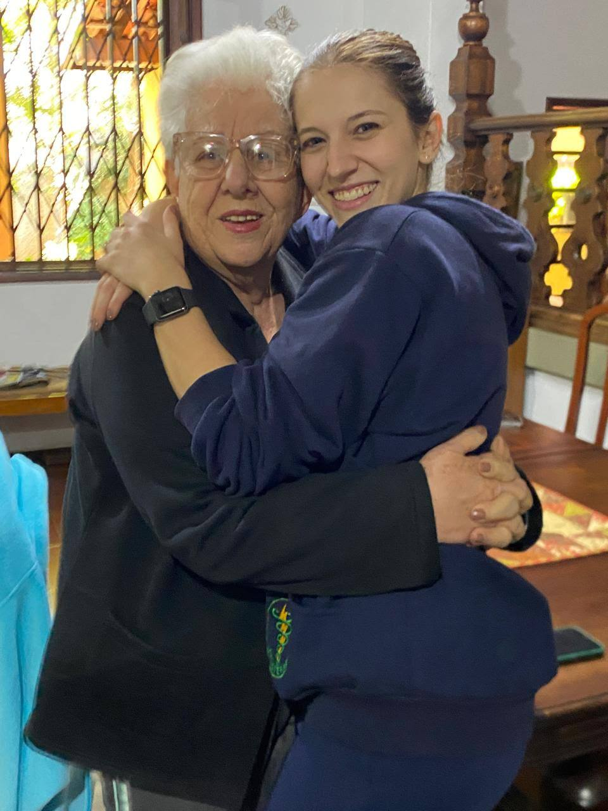
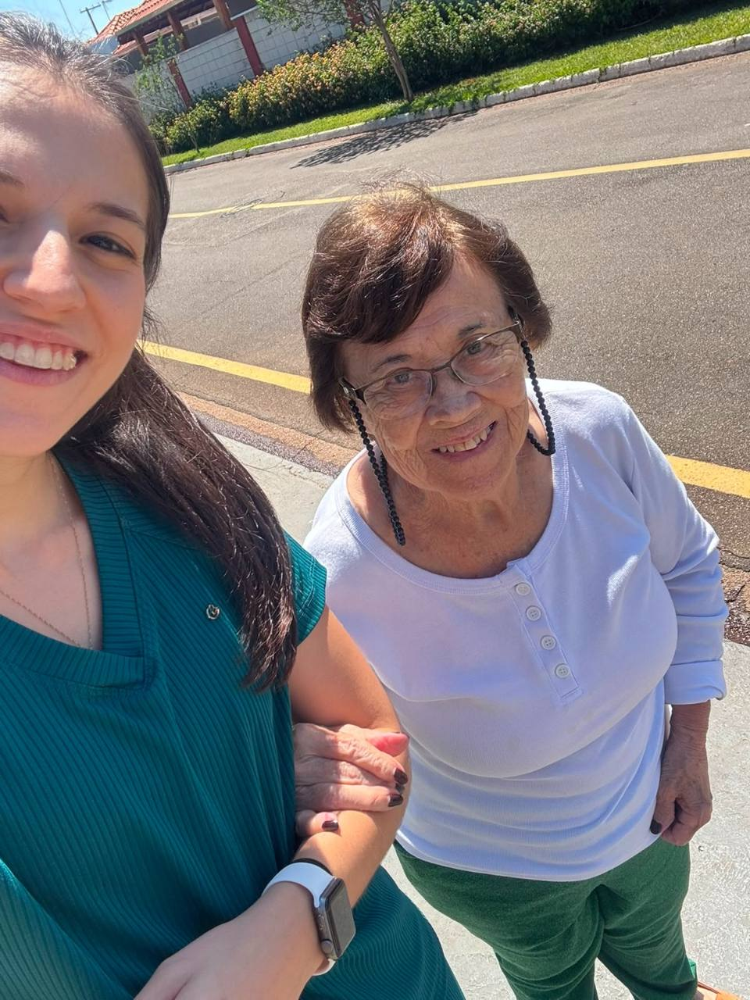
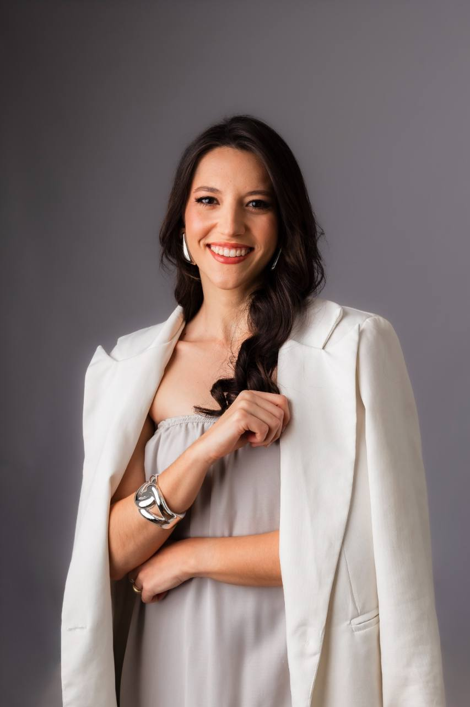
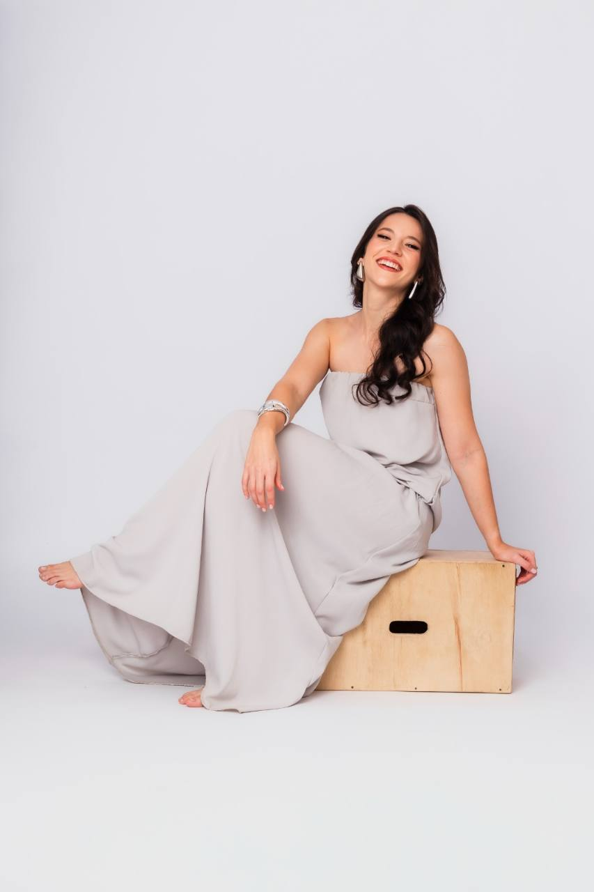
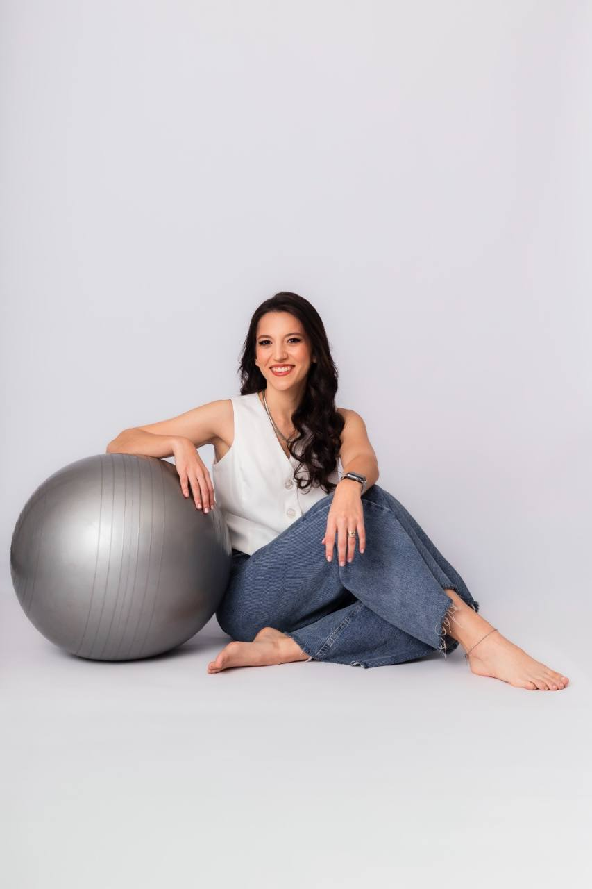
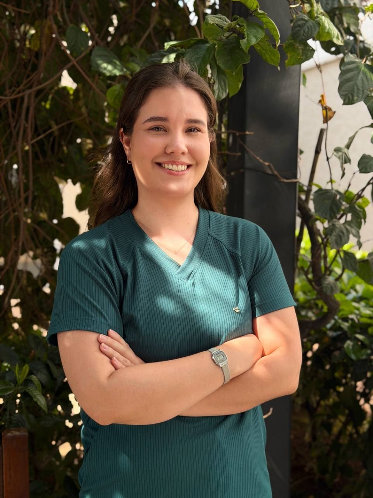
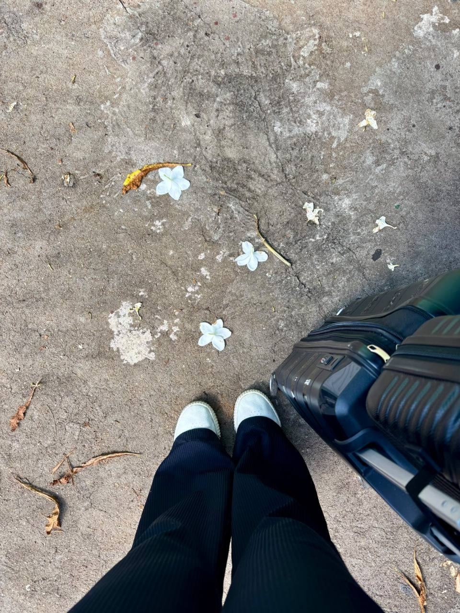

Força e mobilidade
Trabalhar o movimento e as capacidades físicas, considerando o ritmo e as necessidades de cada paciente.
Fisioterapia domiciliar para a pessoa idosa
Movimento, autonomia e qualidade de vida, no lugar onde a vida acontece: em casa.
Unimos excelência técnica e acolhimento para cuidar de quem é importante para você, respeitando sua história, seu ritmo e suas possibilidades.

Vínculos que também fazem parte do cuidado.Mais possibilidades para o dia a dia
Levantar, caminhar, sair de casa, abraçar alguém. Cada conquista tem um significado. Nosso cuidado parte daquilo que faz sentido para cada pessoa.
Trabalhar o movimento e as capacidades físicas, considerando o ritmo e as necessidades de cada paciente.
Desenvolver estratégias para os deslocamentos e os desafios que fazem parte da rotina em casa.
Preservar ou recuperar a participação nas atividades diárias e valorizar o que a pessoa consegue fazer.
Avaliar, planejar e reavaliar o tratamento, com orientação à família e atenção à evolução de cada pessoa.
Os objetivos e a frequência dos atendimentos são definidos após avaliação individual.


A essência da Olhan
Por trás de cada diagnóstico existe uma pessoa. Uma história, uma família, uma rotina e o desejo de continuar vivendo com significado.
A Olhan oferece fisioterapia domiciliar especializada no cuidado à pessoa idosa. Nosso atendimento une conhecimento técnico, escuta e um plano de cuidado construído para a realidade de cada paciente.
Uma filosofia. Uma equipe. O mesmo compromisso.
A proximidade construída nos atendimentos ganhou uma estrutura própria: princípios compartilhados para orientar a equipe e manter um cuidado consistente, seguro e acolhedor.
História, desejos, medos e objetivos são parte do plano de cuidado. Escutar também é cuidar.
Conhecimento científico e raciocínio clínico orientam um tratamento personalizado, sem protocolos engessados.
Processos claros, registros e comunicação ajudam a manter a qualidade do cuidado em toda a equipe.
A rede de apoio participa da jornada. As metas se conectam à autonomia e às atividades que importam para o paciente.
A gente caminha junto
Você e sua família recebem orientação em cada etapa, com um cuidado organizado e próximo.
A equipe escuta sua necessidade, explica o serviço e faz a triagem inicial para entender como podemos ajudar.
Primeiro contato e triagemA avaliação inicial orienta o relatório, a definição dos objetivos e a elaboração do plano terapêutico.
Avaliação, relatório e contratoOs atendimentos seguem o plano individualizado, com atenção à rotina e participação da família e da rede de apoio.
Plano terapêutico e atendimentosReavaliações e relatórios periódicos orientam os próximos passos, os ajustes no plano e a alta, quando indicada.
Reavaliações e continuidade
Quem está por trás desse olhar
Fisioterapeuta e fundadora da Olhan, Paula atua exclusivamente com fisioterapia domiciliar voltada à população idosa, com foco em funcionalidade, movimento e qualidade de vida no envelhecimento.
Sua experiência próxima a pacientes e famílias deu origem ao Método Olhan: uma maneira de compartilhar com a equipe a mesma filosofia de cuidado que sempre orientou sua atuação.
CREFITO-3 348637-F


Pessoas que cuidam de pessoas
O cuidado não está restrito a uma pessoa. Nossa equipe é orientada pelos princípios do Método Olhan, com compromisso com a qualidade assistencial, o aprendizado contínuo e o respeito a cada paciente.

A confiança também se conta em histórias
Uma seleção de relatos publicados no Google, compartilhados por pacientes e familiares. Toque em um relato para ampliar.
O cuidado vai até você
No caminho de cada atendimento, levamos um compromisso: conhecer a pessoa, respeitar seu espaço e cuidar do que faz diferença em sua rotina.
Conheça o atendimento domiciliar →
Para deixar tudo mais claro
Escolher um cuidado é uma decisão importante. Nossa equipe está aqui para conversar com você.
Tenho outra dúvida ↗Nosso foco é a pessoa idosa. O atendimento é planejado de acordo com a avaliação, as necessidades, a rotina e os objetivos de cada paciente. Familiares e responsáveis podem entrar em contato para entender o serviço.
Sim. Os atendimentos da Olhan são 100% domiciliares. O cuidado é organizado considerando o ambiente e a realidade do paciente, com conforto e comodidade para ele e sua família.
Depois do primeiro contato e da triagem, a equipe organiza a avaliação inicial. Ela orienta o relatório, os objetivos, a frequência e o plano terapêutico individualizado.
A frequência é definida após a avaliação e pode ser ajustada conforme as reavaliações e os objetivos do plano. Não existe uma frequência única para todos os pacientes.
A Olhan está em Limeira, SP. Entre em contato pelo WhatsApp e informe sua cidade e seu bairro para a equipe verificar a disponibilidade de atendimento no endereço.
Fale com a equipe pelo WhatsApp para conhecer o serviço, consultar valores e organizar a avaliação. O agendamento é feito pela equipe, que orienta você em cada etapa.
Sim. A participação da família e da rede de apoio é um dos princípios do Método Olhan. A equipe oferece orientações durante a jornada, respeitando a autonomia e a individualidade do paciente.
Vamos dar o primeiro passo?
Conte para a equipe o que você procura. Vamos explicar como funciona a fisioterapia domiciliar e orientar os próximos passos.
Converse pelo WhatsApp(19) 99913-2996 Limeira · São Paulo
Consulte a disponibilidade para sua cidade e seu bairro.